전자기기기능사 (2004-04-04 기출문제)
1과목: 전기전자공학
1. 그림과 같은 정전압회로의 설명으로 틀린 것은?
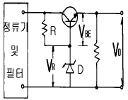
- 이미터폴로워형 정전압회로의 일종이다.
- 출력전압 V0 는 일반적으로 VR 전압과는 무관하다.
- V0 가 증가되면 VCE가 증가되어 출력전압을 감소시킨다.
- VBE 와 VR 의 온도에 의한 변화는 그대로 출력측에 나타난다.
(정답률: 48%)

2. 증폭기의 입력저항이 20kΩ인 회로의 양단에 1V를 가했을 때 출력측 부하저항 5kΩ에서 50V의 전압을 얻었다면 전력이득은 몇 dB 인가?
- 10
- 20
- 30
- 40
(정답률: 33%)
3. 정합용 권수비가 옳은 것은? (단, ni1, ni2는 1차와 2차의 권선, n01, n02는 출력변압기의 1차와 2차권선이며, Zi, ZO는 증폭기의 입력임피던스와 출력임피던스, ZS, ZL는 전원 내부임피던스이다.)
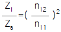
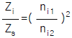
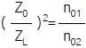
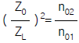
(정답률: 52%)
4. 연산증폭회로에서 출력전압 Vo를 나타낸 식은?
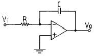
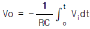
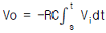
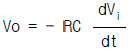
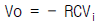
(정답률: 53%)
5. 그림과 같은 회로는 무슨 회로인가? (단, Vi는 직사각형파이다.)
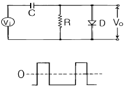
- 클리핑회로
- 클램핑회로
- 콘덴서 입력형 필터회로
- 반파정류회로
(정답률: 67%)
6. RS-FF에서 R=1, S=1일 때 출력은?
- 리세트
- 세트
- 불확정
- Qn
(정답률: 58%)
7. FAN out가 가장 많은 논리회로는?
- TTL게이트
- RTL게이트
- DTL게이트
- ECL게이트
(정답률: 34%)
8. AM변조의 피변조파에서 상측파의 진폭과 반송파의 진폭 관계는? (단, M은 변조도이다.)
- M 배
- M/2 배
- M/4 배
- M/6 배
(정답률: 73%)
9. 저항값이 동일한 저항을 가진 10개의 도선을 병렬로 연결 하였을 때의 합성저항은 한 도선 저항값의 몇 배인가?
- 1/10
- 1/4
- 10
- 4
(정답률: 69%)
10. 공기 중에서 자속밀도 3Wb/m2의 평등자장속에 길이 10㎝의 직선 도선을 자장의 방향과 직각에 놓고 4A의 전류를 흘릴 때 도선에 받는 힘은 몇 N 인가?
- 1.2
- 1.8
- 2.4
- 3.6
(정답률: 46%)
11. 정전용량이 같은 콘덴서 5개를 병렬로 연결하였을 때 합성용량은 5개를 직렬로 접속할 때의 몇 배인가?
- 5
- 10
- 15
- 25
(정답률: 64%)
12. 저항 5Ω, 유도리액턴스 30Ω, 용량리액턴스 18Ω인 RLC 직렬회로에 130V의 교류를 가할 때 흐르는 전류는?
- 3A, 용량성
- 3A, 유도성
- 10A, 용량성
- 10A, 유도성
(정답률: 35%)
13. 온도보상용 저항으로 사용하는 반도체 소자는?
- SCR
- MOS-FET
- 다이오드 쵸퍼
- 서미스터
(정답률: 62%)
14. 그림의 정전압회로에서 부하 RL의 양단에 걸리는 전압은 몇 V 인가?
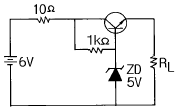
- 3
- 4
- 4.4
- 5.4
(정답률: 48%)
15. 회로의 clock pulse 발진주파수는 몇 kHz 인가?
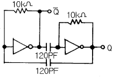
- 292
- 458
- 583
- 854
(정답률: 35%)
2과목: 전자계산기일반
16. 그림과 같은 연산증폭기를 이용한 펄스발생회로의 명칭은?
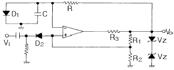
- 비안정 멀티바이브레이터회로
- 단안정 멀티바이브레이터회로
- 쌍안정 멀티바이브레이터회로
- 슈미트트리거회로
(정답률: 30%)
17. 논리식 (A+B)(A+C)를 가장 간단하게 표현한 것은?
- A+C
- A+BC
- B+C
- B+AC
(정답률: 83%)
18. Address 지정 방식이 아닌 것은?
- Branch Addressing Mode
- Direct Addressing Mode
- Indexed Addressing Mode
- Immediate Addressing Mode
(정답률: 52%)
19. 다음 중 기억소자에 속하지 않는 것은?
- ROM
- RAM
- CPU
- EEPROM
(정답률: 75%)
20. 중앙처리장치와 주기억장치 간의 속도 차이를 해결하기 위한 기억장치는?
- Virtual memory
- Cache memory
- DMA
- Core memory
(정답률: 71%)
21. 컴퓨터 중심의 언어는?
- 기계어
- 포트란
- C 언어
- 베이식 언어
(정답률: 72%)
22. 명령을 수행할 때마다 어드레스를 하나씩 증가시켜 순차적으로 수행할 명령의 어드레스를 제공하는 기능을 갖는 것은?
- 명령 해독기(command decoder)
- 주소 레지스터(address register)
- 기억 레지스터(storage register)
- 명령 계수기(instruction counter)
(정답률: 48%)
23. 다음 보기의 A, B에 각 각 들어갈 내용은?
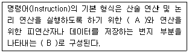
- A: 명령 코드부(Operation code)
B: 번지부(Operand) - A: 번지부(Operand)
B: 어큐뮬레이터(Accumulator) - A: 어큐뮬레이터(Accumulator)
B: 산술 및 논리 연산부(ALU) - A: 산술 및 논리 연산부(ALU)
B: 명령 코드부(Operation code)
(정답률: 48%)
24. 레지스터 내의 필요없는 부분을 지워 버리고 원하는 비트만을 가지고 처리하기 위하여 사용되는 연산자는?
- AND
- OR
- SHIFT
- ROTATE
(정답률: 69%)
25. CPU는 제어장치, 연산장치, 기억장치로 구성되어 있다. 이들 중 누산기를 가지고 있는 장치는?
- 연산장치
- 제어장치
- 주기억장치
- 보조기억장치
(정답률: 60%)
26. 마이크로프로세서의 내부 구성 요소가 아닌 것은?
- 연산부
- 제어부
- 레지스터부
- 데이터 버스
(정답률: 61%)
27. 데이터를 스택에 일시 저장하거나 스택으로부터 데이터를 불러내는 명령은?
- store 명령
- load 명령
- push/pop 명령
- 입ㆍ출력 명령
(정답률: 66%)
28. 순서도를 작성하는 일반 규칙으로 옳지 않은 것은?
- 한국산업규격의 표준 기호를 사용한다.
- 제어 흐름에 따라 위에서 아래로, 왼쪽에서 오른쪽으로 그린다.
- 기호 내부에 처리 내용을 자세하게 기술하여 주석을 기술하지 않도록 한다.
- 문제가 복잡하고 어려울 때는 블록 별로 나누어 단계적으로 그린다.
(정답률: 66%)
29. 내부저항 4㏀, 최대눈금 50V의 전압계로 300V의 전압을 측정하기 위한 배율기 저항은 몇 Ω 인가?
- 670
- 800
- 20000
- 24000
(정답률: 55%)
30. 정류형 계기가 저 전압용으로 적합한 이유는?
- 회전 토크가 약하다.
- 소비전력이 적으므로
- 지시계기로는 적합치 않다.
- 외부 자계의 영향을 크게 받기 때문에
(정답률: 54%)
3과목: 전자측정
31. 측정자의 눈금 오독, 부주의로 발생하는 오차는?
- 이론 오차
- 우연 오차
- 계기 오차
- 개인 오차
(정답률: 76%)
32. 단상 전력계로 3상 전력을 측정하고자 한다. 측정법이 아닌 것은?
- 1 전력계법
- 2 전력계법
- 3 전력계법
- 4 전력계법
(정답률: 58%)
33. 고주파수 측정에 사용되는 주파수계가 아닌 것은?
- 헤테로다인 주파수계
- 진동편형 주파수계
- 흡수형 주파수계
- 동축 주파수계
(정답률: 47%)
34. 전압계에 100〔V〕를 가했을 때 전압계의 지시가 101.5〔V〕이면 그 오차율은?
- +1.48〔%〕
- +1.5〔%〕
- -1.48〔%〕
- -1.5〔%〕
(정답률: 71%)
35. 계수형 주파수계의 특징 중 옳지 않은 것은?
- 온도에 의한 영향이 많다.
- 파형 전압에 의한 영향이 적다.
- 조작이 간단하고, 결과가 숫자로 나타난다.
- 어떤 파형의 교류라도 적당한 크기이면 주파수 측정이 가능하다.
(정답률: 29%)
36. 다음 브리지 회로에 검류계 G에 전류가 흐르지 않는 평형 조건이 되었다. 다음 임피던스로 옳은 것은?
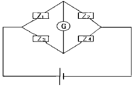
- Z1Z4=Z2Z3
- Z1Z3=Z2Z4
- Z1Z2=Z3Z4
- Z1Z4≠Z2Z3
(정답률: 65%)
37. 디지털 주파수계에서 발생하는 오차가 아닌 것은?
- 게이팅 에러 오차
- 개인적 오차
- 트리거 레벨 오차
- 타임 베이스 오차
(정답률: 65%)
38. 지시 계기의 3대 요소가 아닌 것은?
- 제동 장치
- 유도 장치
- 구동 장치
- 제어 장치
(정답률: 76%)
39. 낮은 주파수에서도 출력 파형이 좋고, 취급이 간편하여 저주파 발진기로 가장 널리 쓰이는 것은?
- LC 발진기
- RC 발진기
- RL 발진기
- 수정 발진기
(정답률: 38%)
40. 정전 전압계의 특징으로 옳지 않은 것은?
- 정전 전압계 또는 전위계는 전압을 직접 측정하는 계기이다.
- 정전 전압계의 제동은 공기 제동이나 액체 제동 또는 전자 제동을 사용한다.
- 주로 저압 측정용 전압계로 많이 쓰인다.
- 대표적인 예로는 아브라함 빌라드 형과 캘빈 형의 정전 전압계가 있다.
(정답률: 50%)
41. 고주파 유도가열에서 열발생의 원인이 되는 현상은?
- 와류
- 정전유도
- 광전효과
- 동조
(정답률: 56%)
42. 금속의 두께 측정시 초음파의 어떤 성질을 이용하는가?
- 전파속도
- 진동력
- 공진작용
- 굴절작용
(정답률: 48%)
43. 초음파가 기체 중에서 어떤 파형으로 전파되는가?
- 표면파
- 횡파
- 종파
- 종파와 횡파
(정답률: 51%)
44. 유도 가열법으로 가열할 수 있는 것은?
- 목재
- 금속
- 유리
- 고무
(정답률: 70%)
45. 유도가열의 특징으로 거리가 먼 것은?
- 가열속도가 빠르다.
- 필요한 부분에 발열을 집중시킬 수 있다.
- 금속의 표면가열이 매우 어렵게 이루어진다.
- 가열을 정밀하게 조절할 수 있다.
(정답률: 73%)
4과목: 전자기기 및 음향영상기기
46. 프로세스 제어는 어느 제어에 속하는가?
- 추치 제어
- 속도 제어
- 정치 제어
- 프로그램 제어
(정답률: 61%)
47. 프로세스 제어에서 각종 공법량을 임피던스로 변환하는데 필요한 것은?
- 슬라이드 저항기
- 진동판
- 유압 분사관
- 전자 코일
(정답률: 32%)
48. 태양전지의 용도가 아닌 것은?
- 조도계나 노출계
- 인공위성의 전원
- 광전자 방출 효과
- 초단파 무인 중계국
(정답률: 46%)
49. 다음 그림에서 종합 전달 함수는 어떻게 표시되는가?
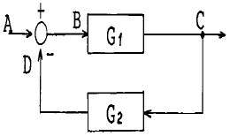
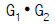
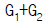
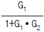
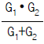
(정답률: 61%)
50. 다음 회로의 전달함수는?
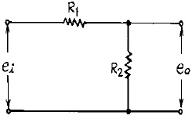
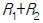
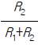
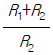
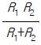
(정답률: 62%)
51. 유전가열의 응용에 해당되지 않는 것은?
- 목재의 건조
- 고무의 가황
- 종이나 섬유류의 건조
- 금속의 균열 발전
(정답률: 43%)
52. 공항에 수색레이더(SRE)와 정측레이더(PAR)의 두 레이더가 설치된 항법 보조장치는?
- 거리측정 장치
- 고도측정 장치
- ILS 장치
- 지상제어 진입 장치(GCA)
(정답률: 63%)
53. 전자 냉동은 어떤 효과를 이용한 것인가?
- 피어즈 효과
- 펠티어 효과
- 지이벡 효과
- 쇼트키 효과
(정답률: 83%)
54. FM 통신 방식 중 고음부를 강조하여 S/N 비를 개선하는 회로는?
- De - emphasis 회로
- Pre - emphasis 회로
- Limiter 회로
- Squelch 회로
(정답률: 50%)
55. 컬러 TV 수상기에서 특정 채널만이 흑백으로 나올 때의 고장은?
- 컬러킬러의 동작상태 불량
- 3.58[㎒]발진 주파수의 발진정지
- 국부발진 주파수의 조정불량
- 위상검파 회로 불량
(정답률: 48%)
56. 증폭회로에 1[㎽]를 공급하였을 때 출력으로 1[W]가 얻어졌다면, 이 때 이득은?
- 10[㏈]
- 20[㏈]
- 30[㏈]
- 40[㏈]
(정답률: 45%)
57. 두개의 트랜지스터가 부하에 대하여 직렬로 동작하고 직류 전원에 대해서는 병렬로 접속되는 회로는?
- SEPP 회로
- BTL 회로
- OTL 회로
- DEPP 회로
(정답률: 65%)
58. VTR에서 자기기록의 본질적 특성인 저역에 있어서의 저감도, 비직선성 및 재생신호의 레벨변동 등의 문제를 피하기 위하여, 비디오 신호는 어떤 방식을 채용하고 있는가?
- 저반송파 AM 변조방식
- 전반송파 AM 변조방식
- 저반송파 FM 변조방식
- 전반송파 FM 변조방식
(정답률: 35%)
59. 수퍼 헤테로다인 수신기에 RF 증폭단을 부가했을 때, 발생하는 현상으로 옳지 않은 것은?
- S/N이 개선된다.
- 감도가 나빠진다.
- 영상주파수 선택도가 좋아진다.
- 국부발진 에너지가 안테나를 통하여 외부에 방사되지 않는다.
(정답률: 49%)
60. 일반적으로 수퍼 헤테로다인 수신기에서 주파수 변환회로의 이상적인 변환 이득은?
- 낮을수록 좋다.
- 클수록 좋다.
- 중간 정도가 좋다.
- 별 관계가 없다.
(정답률: 71%)